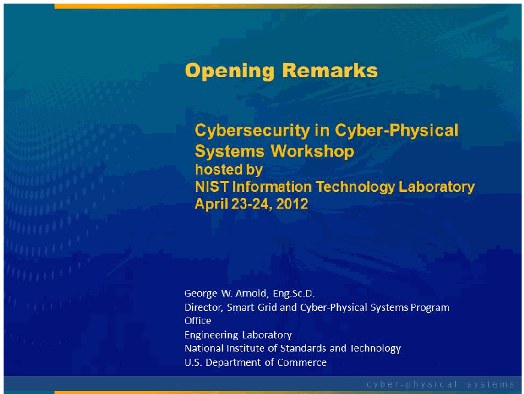

NIST IR 7916 日本語訳
英語タイトル : Proceedings of the Cybersecurity in Cyber-Physical Systems Workshop, April 23-24, 2012日本語タイトル : サイバーフィジカルシステムにおけるサイバーセキュリティワークショップ会議録、2012 年 4 月 23～24 日
公開日 : 2013-02-15
原文URL : https://csrc.nist.gov/pubs/ir/7916/final
翻訳編集 : 自動生成（有志による非公式の日本語訳）, 原文取得日 : 2026-10-31, 訳文 : 105 / 120 ブロック
[要約] NIST IR 7916 は、2012 年 4 月 23～24 日に開催されたサイバーフィジカルシステム（CPS）におけるサイバーセキュリティワークショップの会議録で、登壇者の要旨とスライドが含まれています。NIST のコンピューターセキュリティ部門が主催したこのワークショップでは、研究成果と実世界での導入経験に焦点を当てて、CPS のサイバーセキュリティのニーズを探りました。初日は、ネットワーク接続された自動車、ネットワーク接続された医療機器、半導体製造、サイバーフィジカルテストベッドなどが取り上げられ、NSF の Farnham Jahanian 博士が基調講演者を務めました。2 日目は電力スマートグリッドが取り上げられ、AMI のレジリエンス、電力網の状態推定、偽データ注入攻撃などの発表が含まれています。
PDF から抽出した原文のうち 11 ブロックは原本との照合待ちです。
PDF p.9: 抽出できる文字が少ないため OCR または画像の照合が必要
PDF p.10: 抽出できる文字が少ないため OCR または画像の照合が必要
PDF p.11: 抽出できる文字が少ないため OCR または画像の照合が必要
PDF p.12: 抽出できる文字が少ないため OCR または画像の照合が必要
PDF p.13: 抽出できる文字が少ないため OCR または画像の照合が必要
PDF p.14: 抽出できる文字が少ないため OCR または画像の照合が必要
PDF p.15: 二段組の可能性があるため読み順を原本と照合してください
PDF p.16: 二段組の可能性があるため読み順を原本と照合してください
PDF p.17: 抽出できる文字が少ないため OCR または画像の照合が必要
PDF p.18: 抽出できる文字が少ないため OCR または画像の照合が必要
PDF p.19: 抽出できる文字が少ないため OCR または画像の照合が必要
PDF p.20: 抽出できる文字が少ないため OCR または画像の照合が必要
PDF p.21: 抽出できる文字が少ないため OCR または画像の照合が必要
PDF p.22: 抽出できる文字が少ないため OCR または画像の照合が必要
PDF p.23: 抽出できる文字が少ないため OCR または画像の照合が必要
PDF p.24: 抽出できる文字が少ないため OCR または画像の照合が必要
PDF p.25: 抽出できる文字が少ないため OCR または画像の照合が必要
PDF p.26: 抽出できる文字が少ないため OCR または画像の照合が必要
PDF p.27: 抽出できる文字が少ないため OCR または画像の照合が必要
PDF p.28: 抽出できる文字が少ないため OCR または画像の照合が必要
PDF p.29: 抽出できる文字が少ないため OCR または画像の照合が必要
PDF p.30: 抽出できる文字が少ないため OCR または画像の照合が必要
PDF p.31: 二段組の可能性があるため読み順を原本と照合してください
PDF p.33: 抽出できる文字が少ないため OCR または画像の照合が必要
PDF p.50: 抽出できる文字が少ないため OCR または画像の照合が必要
PDF p.52: 抽出できる文字が少ないため OCR または画像の照合が必要
PDF p.53: 抽出できる文字が少ないため OCR または画像の照合が必要
PDF p.54: 抽出できる文字が少ないため OCR または画像の照合が必要
PDF p.55: 抽出できる文字が少ないため OCR または画像の照合が必要
PDF p.56: 抽出できる文字が少ないため OCR または画像の照合が必要
PDF p.57: 抽出できる文字が少ないため OCR または画像の照合が必要
PDF p.58: 抽出できる文字が少ないため OCR または画像の照合が必要
PDF p.59: 抽出できる文字が少ないため OCR または画像の照合が必要
PDF p.60: 抽出できる文字が少ないため OCR または画像の照合が必要
PDF p.61: 抽出できる文字が少ないため OCR または画像の照合が必要
PDF p.62: 抽出できる文字が少ないため OCR または画像の照合が必要
PDF p.63: 抽出できる文字が少ないため OCR または画像の照合が必要
PDF p.64: 抽出できる文字が少ないため OCR または画像の照合が必要
PDF p.65: 抽出できる文字が少ないため OCR または画像の照合が必要
PDF p.66: 抽出できる文字が少ないため OCR または画像の照合が必要
PDF p.67: 抽出できる文字が少ないため OCR または画像の照合が必要
PDF p.68: 抽出できる文字が少ないため OCR または画像の照合が必要
PDF p.70: 抽出できる文字が少ないため OCR または画像の照合が必要
PDF p.71: 抽出できる文字が少ないため OCR または画像の照合が必要
PDF p.72: 抽出できる文字が少ないため OCR または画像の照合が必要
PDF p.73: 抽出できる文字が少ないため OCR または画像の照合が必要
PDF p.74: 抽出できる文字が少ないため OCR または画像の照合が必要
PDF p.75: 抽出できる文字が少ないため OCR または画像の照合が必要
PDF p.76: 抽出できる文字が少ないため OCR または画像の照合が必要
PDF p.77: 抽出できる文字が少ないため OCR または画像の照合が必要
PDF p.78: 二段組の可能性があるため読み順を原本と照合してください
PDF p.79: 二段組の可能性があるため読み順を原本と照合してください
PDF p.80: 二段組の可能性があるため読み順を原本と照合してください
PDF p.81: 抽出できる文字が少ないため OCR または画像の照合が必要
PDF p.82: 抽出できる文字が少ないため OCR または画像の照合が必要
PDF p.83: 抽出できる文字が少ないため OCR または画像の照合が必要
PDF p.84: 抽出できる文字が少ないため OCR または画像の照合が必要
PDF p.85: 抽出できる文字が少ないため OCR または画像の照合が必要
PDF p.86: 抽出できる文字が少ないため OCR または画像の照合が必要
PDF p.87: 抽出できる文字が少ないため OCR または画像の照合が必要
PDF p.88: 抽出できる文字が少ないため OCR または画像の照合が必要
PDF p.89: 抽出できる文字が少ないため OCR または画像の照合が必要
PDF p.90: 抽出できる文字が少ないため OCR または画像の照合が必要
PDF p.91: 抽出できる文字が少ないため OCR または画像の照合が必要
PDF p.92: 抽出できる文字が少ないため OCR または画像の照合が必要
PDF p.93: 抽出できる文字が少ないため OCR または画像の照合が必要
PDF p.94: 抽出できる文字が少ないため OCR または画像の照合が必要
PDF p.95: 抽出できる文字が少ないため OCR または画像の照合が必要
PDF p.96: 抽出できる文字が少ないため OCR または画像の照合が必要
PDF p.97: 抽出できる文字が少ないため OCR または画像の照合が必要
PDF p.98: 抽出できる文字が少ないため OCR または画像の照合が必要
PDF p.99: 抽出できる文字が少ないため OCR または画像の照合が必要
PDF p.102: 二段組の可能性があるため読み順を原本と照合してください
PDF p.104: 抽出できる文字が少ないため OCR または画像の照合が必要
PDF p.105: 抽出できる文字が少ないため OCR または画像の照合が必要
PDF p.106: 抽出できる文字が少ないため OCR または画像の照合が必要
PDF p.107: 抽出できる文字が少ないため OCR または画像の照合が必要
PDF p.108: 抽出できる文字が少ないため OCR または画像の照合が必要
PDF p.109: 抽出できる文字が少ないため OCR または画像の照合が必要
PDF p.110: 抽出できる文字が少ないため OCR または画像の照合が必要
PDF p.111: 抽出できる文字が少ないため OCR または画像の照合が必要
PDF p.112: 抽出できる文字が少ないため OCR または画像の照合が必要
PDF p.113: 抽出できる文字が少ないため OCR または画像の照合が必要
PDF p.114: 抽出できる文字が少ないため OCR または画像の照合が必要
PDF p.115: 抽出できる文字が少ないため OCR または画像の照合が必要
PDF p.116: 抽出できる文字が少ないため OCR または画像の照合が必要
PDF p.117: 抽出できる文字が少ないため OCR または画像の照合が必要
PDF p.118: 抽出できる文字が少ないため OCR または画像の照合が必要
PDF p.119: 抽出できる文字が少ないため OCR または画像の照合が必要
PDF p.120: 抽出できる文字が少ないため OCR または画像の照合が必要
PDF p.121: 抽出できる文字が少ないため OCR または画像の照合が必要
PDF p.122: 抽出できる文字が少ないため OCR または画像の照合が必要
PDF p.123: 抽出できる文字が少ないため OCR または画像の照合が必要
PDF p.124: 抽出できる文字が少ないため OCR または画像の照合が必要
PDF p.125: 二段組の可能性があるため読み順を原本と照合してください
PDF p.126: 二段組の可能性があるため読み順を原本と照合してください
PDF p.128: 抽出できる文字が少ないため OCR または画像の照合が必要
PDF p.130: 抽出できる文字が少ないため OCR または画像の照合が必要
PDF p.132: 抽出できる文字が少ないため OCR または画像の照合が必要
PDF p.133: 抽出できる文字が少ないため OCR または画像の照合が必要
PDF p.134: 抽出できる文字が少ないため OCR または画像の照合が必要
PDF p.135: 抽出できる文字が少ないため OCR または画像の照合が必要
PDF p.136: 抽出できる文字が少ないため OCR または画像の照合が必要
PDF p.137: 抽出できる文字が少ないため OCR または画像の照合が必要
PDF p.138: 抽出できる文字が少ないため OCR または画像の照合が必要
PDF p.140: 抽出できる文字が少ないため OCR または画像の照合が必要
PDF p.141: 二段組の可能性があるため読み順を原本と照合してください
PDF p.142: 二段組の可能性があるため読み順を原本と照合してください
PDF p.144: 抽出できる文字が少ないため OCR または画像の照合が必要
PDF p.145: 抽出できる文字が少ないため OCR または画像の照合が必要
PDF p.162: 抽出できる文字が少ないため OCR または画像の照合が必要
PDF p.163: 二段組の可能性があるため読み順を原本と照合してください
PDF p.164: 二段組の可能性があるため読み順を原本と照合してください
PDF p.165: 二段組の可能性があるため読み順を原本と照合してください
PDF p.166: 抽出できる文字が少ないため OCR または画像の照合が必要
PDF p.167: 抽出できる文字が少ないため OCR または画像の照合が必要
PDF p.168: 抽出できる文字が少ないため OCR または画像の照合が必要
PDF p.170: 抽出できる文字が少ないため OCR または画像の照合が必要
PDF p.171: 抽出できる文字が少ないため OCR または画像の照合が必要
PDF p.172: 抽出できる文字が少ないため OCR または画像の照合が必要
PDF p.174: 抽出できる文字が少ないため OCR または画像の照合が必要
PDF p.180: 抽出できる文字が少ないため OCR または画像の照合が必要
PDF p.181: 抽出できる文字が少ないため OCR または画像の照合が必要
PDF p.183: 抽出できる文字が少ないため OCR または画像の照合が必要
PDF p.185: 抽出できる文字が少ないため OCR または画像の照合が必要
PDF p.186: 抽出できる文字が少ないため OCR または画像の照合が必要
PDF p.194: 抽出できる文字が少ないため OCR または画像の照合が必要
PDF p.196: 抽出できる文字が少ないため OCR または画像の照合が必要
PDF p.197: 抽出できる文字が少ないため OCR または画像の照合が必要
PDF p.198: 抽出できる文字が少ないため OCR または画像の照合が必要
PDF p.199: 抽出できる文字が少ないため OCR または画像の照合が必要
PDF p.204: 抽出できる文字が少ないため OCR または画像の照合が必要
PDF p.206: 抽出できる文字が少ないため OCR または画像の照合が必要
PDF p.207: 抽出できる文字が少ないため OCR または画像の照合が必要
PDF p.208: 抽出できる文字が少ないため OCR または画像の照合が必要
PDF p.210: 抽出できる文字が少ないため OCR または画像の照合が必要
PDF p.212: 抽出できる文字が少ないため OCR または画像の照合が必要
PDF p.213: 抽出できる文字が少ないため OCR または画像の照合が必要
PDF p.214: 抽出できる文字が少ないため OCR または画像の照合が必要
PDF p.215: 抽出できる文字が少ないため OCR または画像の照合が必要
PDF p.216: 抽出できる文字が少ないため OCR または画像の照合が必要
PDF p.217: 抽出できる文字が少ないため OCR または画像の照合が必要
PDF p.218: 抽出できる文字が少ないため OCR または画像の照合が必要
PDF p.219: 抽出できる文字が少ないため OCR または画像の照合が必要
PDF p.223: 抽出できる文字が少ないため OCR または画像の照合が必要
PDF p.225: 抽出できる文字が少ないため OCR または画像の照合が必要
PDF p.227: 抽出できる文字が少ないため OCR または画像の照合が必要
PDF p.228: 抽出できる文字が少ないため OCR または画像の照合が必要
PDF p.230: 抽出できる文字が少ないため OCR または画像の照合が必要
PDF p.232: 抽出できる文字が少ないため OCR または画像の照合が必要
PDF p.233: 抽出できる文字が少ないため OCR または画像の照合が必要
PDF p.234: 抽出できる文字が少ないため OCR または画像の照合が必要
PDF p.235: 抽出できる文字が少ないため OCR または画像の照合が必要
PDF p.236: 抽出できる文字が少ないため OCR または画像の照合が必要
PDF p.238: 抽出できる文字が少ないため OCR または画像の照合が必要
PDF p.240: 抽出できる文字が少ないため OCR または画像の照合が必要
PDF p.241: 抽出できる文字が少ないため OCR または画像の照合が必要
PDF p.242: 抽出できる文字が少ないため OCR または画像の照合が必要
PDF p.243: 抽出できる文字が少ないため OCR または画像の照合が必要
PDF p.244: 抽出できる文字が少ないため OCR または画像の照合が必要
PDF p.248: 抽出できる文字が少ないため OCR または画像の照合が必要
PDF p.249: 抽出できる文字が少ないため OCR または画像の照合が必要
PDF p.251: 抽出できる文字が少ないため OCR または画像の照合が必要
PDF p.253: 抽出できる文字が少ないため OCR または画像の照合が必要
PDF p.255: 抽出できる文字が少ないため OCR または画像の照合が必要
PDF p.258: 抽出できる文字が少ないため OCR または画像の照合が必要
PDF p.260: 抽出できる文字が少ないため OCR または画像の照合が必要
PDF p.262: 抽出できる文字が少ないため OCR または画像の照合が必要
PDF p.264: 抽出できる文字が少ないため OCR または画像の照合が必要
PDF p.266: 抽出できる文字が少ないため OCR または画像の照合が必要
PDF p.267: 抽出できる文字が少ないため OCR または画像の照合が必要
PDF p.269: 抽出できる文字が少ないため OCR または画像の照合が必要
PDF p.270: 抽出できる文字が少ないため OCR または画像の照合が必要
PDF p.271: 抽出できる文字が少ないため OCR または画像の照合が必要
PDF p.272: 抽出できる文字が少ないため OCR または画像の照合が必要
NISTIR 7916
NISTIR 7916
Proceedings of the Cybersecurity in Cyber-Physical Systems Workshop, April 23 – 24, 2012
サイバーフィジカルシステムにおけるサイバーセキュリティワークショップ会議録、2012 年 4 月 23～24 日
Editor:
Tanya Brewer
編集者:
Tanya Brewer
http://dx.doi.org/10.6028/NIST.IR.7916
http://dx.doi.org/10.6028/NIST.IR.7916
NISTIR 7916
NISTIR 7916
Proceedings of the Cybersecurity in Cyber-Physical Systems Workshop, April 23 – 24, 2012
サイバーフィジカルシステムにおけるサイバーセキュリティワークショップ会議録、2012 年 4 月 23～24 日
Editor:
Tanya Brewer
編集者:
Tanya Brewer
Computer Security Division
Information Technology Laboratory
コンピューターセキュリティ部門
情報技術研究所
http://dx.doi.org/10.6028/NIST.IR.7916
http://dx.doi.org/10.6028/NIST.IR.7916
February 2013
2013 年 2 月
U.S. Department of Commerce
米国商務省
Rebecca M. Blank, Acting Secretary of Commerce and Deputy Secretary of Commerce
Rebecca M. Blank、商務長官代行兼商務副長官
National Institute of Standards and Technology
米国国立標準技術研究所
Patrick D. Gallagher, Under Secretary of Commerce for Standards and Technology and Director
Patrick D. Gallagher、NIST 所長兼商務次官（標準・技術担当）
Reports on Computer Systems Technology
コンピューターシステム技術に関する報告書
The Information Technology Laboratory (ITL) at the National Institute of Standards and Technology (NIST) promotes the U.S. economy and public welfare by providing technical leadership for the Nation’s measurement and standards infrastructure. ITL develops tests, test methods, reference data, proof of concept implementations, and technical analyses to advance the development and productive use of information technology. ITL’s responsibilities include the development of management, administrative, technical, and physical standards and guidelines for the cost-effective security and privacy of other than national security-related information in Federal information systems.
米国国立標準技術研究所（NIST）の情報技術研究所（ITL）は、国の計測・標準インフラストラクチャに対する技術的なリーダーシップを提供することにより、米国の経済と公共の福祉を促進しています。ITL は、情報技術の発展と生産的な利用を推進するため、テスト、テスト方法、参照データ、概念実証の実装、技術的分析を開発しています。ITL の責務には、連邦情報システムにおける国家安全保障に関係しない情報について、費用対効果の高いセキュリティとプライバシーを実現するための、マネジメント、管理、技術、物理面の標準およびガイドラインの策定が含まれます。
Authority
権限
This publication has been developed by NIST to further its statutory responsibilities under the Federal Information Security Management Act (FISMA), Public Law (P.L.) 107-347. NIST is responsible for developing information security standards and guidelines, including minimum requirements for Federal information systems, but such standards and guidelines shall not apply to national security systems without the express approval of appropriate Federal officials exercising policy authority over such systems. This guideline is consistent with the requirements of the Office of Management and Budget (OMB) Circular A-130, Section 8b(3), Securing Agency Information Systems, as analyzed in Circular A-130, Appendix IV: Analysis of Key Sections. Supplemental information is provided in Circular A-130, Appendix III, Security of Federal Automated Information Resources.
本刊行物は、連邦情報セキュリティマネジメント法（Federal Information Security Management Act、FISMA）、公法（P.L.）107-347 に基づく NIST の法的責務を果たすために、NIST が策定したものです。NIST は、連邦情報システムに対する最低限の要件を含む、情報セキュリティの標準とガイドラインを策定する責任を負いますが、そのような標準とガイドラインは、国家安全保障システムに対して政策上の権限を行使する適切な連邦当局者の明示的な承認がない限り、国家安全保障システムに適用されません。本ガイドラインは、Circular A-130 の付録 IV: Analysis of Key Sections で分析されているとおり、行政管理予算局（OMB）Circular A-130 第 8b(3) 節 Securing Agency Information Systems の要件と整合しています。補足情報は、Circular A-130 の付録 III, Security of Federal Automated Information Resources に示されています。
Nothing in this publication should be taken to contradict the standards and guidelines made mandatory and binding on Federal agencies by the Secretary of Commerce under statutory authority. Nor should these guidelines be interpreted as altering or superseding the existing authorities of the Secretary of Commerce, Director of the OMB, or any other Federal official. This publication may be used by nongovernmental organizations on a voluntary basis and is not subject to copyright in the United States. Attribution would, however, be appreciated by NIST.
本刊行物のいかなる内容も、法令上の権限に基づき商務長官が連邦機関に対して義務的かつ拘束力のあるものとした標準およびガイドラインに反するものと解釈すべきではありません。また、これらのガイドラインは、商務長官、OMB 長官、またはその他の連邦当局者の既存の権限を変更したり、それに優先したりするものと解釈すべきではありません。本刊行物は、非政府組織が任意で使用してもよく、米国では著作権の対象ではありません。ただし、NIST としては、出典を明示していただけると幸いです。
National Institute of Standards and Technology Interagency Report 7916
276 pages (February 2013)
米国国立標準技術研究所 機関間報告書 7916
276 ページ（2013 年 2 月）
Certain commercial entities, equipment, or materials may be identified in this document in order to describe an experimental procedure or concept adequately. Such identification is not intended to imply recommendation or endorsement by NIST, nor is it intended to imply that the entities, materials, or equipment are necessarily the best available for the purpose.
本書では、実験的な手順や概念を適切に説明するために、特定の商業事業者、機器、または資材を明示する場合があります。そのような明示は、NIST による推奨や支持を意味するものではなく、また、それらの事業者、資材、機器がその目的に利用可能なものの中で必ずしも最良であることを意味するものでもありません。
There may be references in this publication to other publications currently under development by NIST in accordance with its assigned statutory responsibilities. The information in this publication, including concepts and methodologies, may be used by Federal agencies even before the completion of such companion publications. Thus, until each publication is completed, current requirements, guidelines, and procedures, where they exist, remain operative. For planning and transition purposes, Federal agencies may wish to closely follow the development of these new publications by NIST.
本刊行物では、NIST が法令で定められた責務に従って現在策定中の他の刊行物に言及している場合があります。それらの関連刊行物が完成する前であっても、本刊行物の情報（概念や方法論を含む）を連邦機関が利用してもよいです。したがって、各刊行物が完成するまでは、既存の要件、ガイドライン、手順がある場合は、それらが引き続き有効です。計画および移行のため、連邦機関は、NIST によるこれらの新しい刊行物の策定状況を注意深く追うことを検討してもよいです。
Organizations are encouraged to review all draft publications during public comment periods and provide feedback to NIST. All NIST publications, other than the ones noted above, are available at http://csrc.nist.gov/publications.
組織は、パブリックコメント期間中にすべてのドラフト刊行物をレビューし、NIST にフィードバックを提供すべきです。上記のものを除くすべての NIST 刊行物は、http://csrc.nist.gov/publications で入手できます。
Abstract
概要
Proceedings of the Cybersecurity in Cyber-Physical Workshop, April 23 – 24, 2012, complete with abstracts and slides from presenters. Some of the cyber-physical systems covered during the first day of the workshop included networked automotive vehicles, networked medical devices, semi-conductor manufacturing, and cyber-physical testbeds. Day two of the workshop covered the electric smart grid. Dr. Farnham Jahanian, NSF, was the keynote speaker on day one.
2012 年 4 月 23～24 日のサイバーフィジカルワークショップの会議録で、登壇者の要旨とスライドが含まれています。ワークショップの初日に取り上げたサイバーフィジカルシステムには、ネットワーク接続された自動車、ネットワーク接続された医療機器、半導体製造、サイバーフィジカルテストベッドなどがありました。2 日目のワークショップでは、電力スマートグリッドを取り上げました。NSF の Farnham Jahanian 博士が、初日の基調講演者を務めました。
Keywords
キーワード
CPS; cyber-physical systems; cybersecurity; networked automotive vehicles; networked medical devices; semi-conductor manufacturing
CPS; cyber-physical systems; cybersecurity; networked automotive vehicles; networked medical devices; semi-conductor manufacturing
Acknowledgements
謝辞
The editor would like to thank Suzanne Lightman, Kevin Stine (both NIST), and Mark Enstrom (Neustar) for being reviewers for this document.
編集者は、本書のレビュアーを務めてくれた Suzanne Lightman 氏、Kevin Stine 氏（いずれも NIST）、Mark Enstrom 氏（Neustar）に感謝します。
Table of Contents
目次
1. Introduction
1. はじめに
Cyber-Physical Systems (CPS) are hybrid networked cyber and engineered physical elements co-designed to create adaptive and predictive systems for enhanced performance.1, 2 These smart systems present a key opportunity to create a competitive advantage for U.S. industrial innovation and to improve the performance and reliability of new and existing systems. From smart manufacturing and the electric smart grid, to smart structures and transportation systems, CPS will pervasively impact the economy and society.
サイバーフィジカルシステム（Cyber-Physical Systems、CPS）は、ネットワーク接続されたサイバー要素と工学的に設計された物理要素が融合し、性能を高めるための適応型で予測的なシステムを作り出すように共同設計されたものです。1, 2 これらのスマートシステムは、米国の産業イノベーションにおける競争優位を生み出し、新規および既存のシステムの性能と信頼性を向上させる重要な機会をもたらします。スマート製造や電力スマートグリッドから、スマート構造物や交通システムに至るまで、CPS は経済と社会に広く影響を与えるでしょう。
Cybersecurity is a critical cross-cutting discipline that provides confidence that cyber-physical systems, their information, and supporting communications and information infrastructures are adequately safeguarded. CPS are increasingly being utilized in critical infrastructures and other settings. However, CPS have many unique characteristics, including the need for real-time response and extremely high availability, predictability, and reliability, which impacts cyber-security decisions.
サイバーセキュリティは、サイバーフィジカルシステム、その情報、およびそれを支える通信と情報インフラストラクチャが、適切に保護されているという確信を与える、重要な分野横断的な領域です。CPS は、重要インフラストラクチャなどの環境で、ますます利用されるようになっています。しかし、CPS には、リアルタイムの応答や、きわめて高い可用性、予測可能性、信頼性が必要であるなど、多くの固有の特性があり、これがサイバーセキュリティに関する判断に影響を与えます。
NIST is currently working in several CPS areas, including the electric smart grid, smart manufacturing, smart buildings, and networked automobiles. This work is being led by the Engineering Laboratory (EL), but also includes the Physical Measurement Laboratory (PML) and the Information Technology Laboratory (ITL). ITL has a number of key areas of expertise that are important to the evolution of CPS−interoperability, usability, reliability, and security. Since 2009, NIST has been very active in the area of the smart grid. ITL has been very active, providing leadership and expertise in a number of relevant areas, including communication networks, timing, and cybersecurity. ITL’s Computer Security Division (CSD) has provided leadership and expertise to the Smart Grid Interoperability Panel’s Cyber Security Working Group. Leveraging our broad expertise in relevant areas, we are now looking at the broader landscape of cyber-physical systems, and how cybersecurity fits into that landscape.
NIST は現在、電力スマートグリッド、スマート製造、スマートビルディング、ネットワーク接続された自動車など、複数の CPS 分野に取り組んでいます。この取り組みは、工学研究所（Engineering Laboratory、EL）が主導していますが、物理計測研究所（Physical Measurement Laboratory、PML）と情報技術研究所（ITL）も参加しています。ITL には、CPS の進化にとって重要な、相互運用性、ユーザビリティ、信頼性、セキュリティといった、複数の主要な専門分野があります。2009 年以降、NIST はスマートグリッドの分野できわめて活発に活動してきました。ITL は、通信ネットワーク、タイミング、サイバーセキュリティなど、関連する複数の分野でリーダーシップと専門知識を提供し、きわめて活発に活動してきました。ITL のコンピューターセキュリティ部門（CSD）は、Smart Grid Interoperability Panel の Cyber Security Working Group にリーダーシップと専門知識を提供してきました。関連分野における幅広い専門知識を活かして、私たちは現在、サイバーフィジカルシステムのより広い全体像と、その中でサイバーセキュリティがどう位置づけられるかを検討しています。
CSD hosted a two-day workshop to explore CPS cybersecurity needs, with a focus on research results and real-world deployment experiences. On the first day, speakers addressed CPS across multiple sectors of industry (e.g., automotive, healthcare, semi-conductor manufacturing). The second day focused on cyber security needs of CPS in the electric smart grid.
CSD は、研究成果と実世界での導入経験に焦点を当てて、CPS のサイバーセキュリティのニーズを探る 2 日間のワークショップを主催しました。初日は、登壇者が複数の産業分野（自動車、医療、半導体製造など）の CPS を取り上げました。2 日目は、電力スマートグリッドにおける CPS のサイバーセキュリティのニーズに焦点を当てました。
This document provides abstracts and corresponding slides from the plenary presentations at the workshop.3
本書は、ワークショップの全体講演の要旨と、対応するスライドを提供します。3
2. Opening Remarks
2. 開会の挨拶
George W. Arnold, DESc
National Coordinator, Smart Grid Interoperability
Director, Cyber-Physical Systems
Engineering Laboratory
NIST
George W. Arnold, DESc
スマートグリッド相互運用性 全米コーディネーター
サイバーフィジカルシステム ディレクター
工学研究所
NIST
Dr. Arnold joined the National Institute of Standards and Technology (NIST) in September 2006 as Deputy Director, Technology Services, after a 33-year career in the telecommunications and information technology industry. He was appointed National Coordinator for Smart Grid Interoperability at in April 2009. He has been responsible for leading the development of standards underpinning the nation’s Smart Grid. In October 2011, Dr. Arnold added an additional role as Director of Cyber Physical Systems within NIST’s Engineering Laboratory (EL). Anticipating and meeting the measurement science and standards needs for technology-intensive manufacturing construction, and cyber-physical systems in ways that enhance economic prosperity and improve the quality of life , EL promotes U.S. innovation and industrial competitiveness in areas of critical national priority.
Arnold 博士は、通信・情報技術業界で 33 年のキャリアを積んだ後、2006 年 9 月に技術サービス担当副所長として米国国立標準技術研究所（NIST）に入りました。2009 年 4 月に、スマートグリッド相互運用性の全米コーディネーターに任命されました。同博士は、国のスマートグリッドを支える標準の策定を主導する責任を負ってきました。2011 年 10 月、Arnold 博士は、NIST の工学研究所（EL）内のサイバーフィジカルシステム担当ディレクターにも就任しました。EL は、経済的繁栄を高め、生活の質を向上させる形で、技術集約型の製造・建設とサイバーフィジカルシステムに関する計測科学と標準のニーズを予見し、満たすことで、国家の重要な優先分野における米国のイノベーションと産業競争力を促進しています。
Dr. Arnold served as Chairman of the Board of the American National Standards Institute (ANSI), a private, non-profit organization that coordinates the U.S. voluntary standardization and conformity assessment system, from 2003 to 2005. He served as President of the IEEE Standards Association in 2007-2008 and as Vice President-Policy for the International Organization for Standardization (ISO) from 2006-2009 where he was responsible for guiding ISO’s strategic plan.
Arnold 博士は、米国の自主的な標準化および適合性評価の仕組みを調整する民間の非営利組織である米国規格協会（ANSI）の理事長を、2003 年から 2005 年まで務めました。2007～2008 年には IEEE Standards Association の会長を、2006～2009 年には国際標準化機構（ISO）の政策担当副会長を務め、ISO の戦略計画の策定を指揮する責任を担いました。
Dr. Arnold previously served as a Vice-President at Lucent Technologies Bell Laboratories where he directed the company’s global standards efforts. His organization played a leading role in the development of international standards for Intelligent Networks and IP-based Next Generation Networks. In previous assignments at AT&T Bell Laboratories he had responsibilities in network planning, systems engineering, and application of information technology to automate operations and maintenance of the nationwide telecommunications network.
Arnold 博士は以前、Lucent Technologies Bell Laboratories の副社長を務め、同社の世界的な標準化活動を指揮しました。同氏の組織は、インテリジェントネットワークと IP ベースの次世代ネットワークの国際標準の策定で主導的な役割を果たしました。それ以前の AT&T Bell Laboratories での職務では、ネットワーク計画、システムエンジニアリング、および全米の通信ネットワークの運用保守を自動化するための情報技術の応用に責任を持ちました。
Dr. Arnold received a Doctor of Engineering Science degree in Electrical Engineering and Computer Science from Columbia University in 1978. He is a Fellow of the IEEE.
Arnold 博士は、1978 年にコロンビア大学で電気工学・計算機科学の工学博士号を取得しました。IEEE のフェローです。

青い背景の表題のスライドです。「Opening Remarks（開会の挨拶）」、NIST 情報技術研究所が主催する Cybersecurity in Cyber-Physical Systems Workshop（2012年4月23～24日）と書かれています。講演者は George W. Arnold, Eng.Sc.D.（米国商務省 NIST 工学研究所 スマートグリッド・サイバーフィジカルシステム プログラム室長）です。フッター: 「cyber-physical systems（サイバーフィジカルシステム）」。
![Slide "NIST At A Glance" with photographs of the two NIST campuses, "Gaithersburg, MD" (a high-rise building) and "Boulder, CO" (buildings in front of mountains). Left bullets: "NIST Research Laboratories"; "Manufacturing Extension Partnership"; "Baldrige Performance Excellence Award"; "Technology Innovation Program". Right: "~ 2,900 employees"; "~ 2,600 associates and facility users"; "~ 1,600 field staff in partner organizations"; "~ 400 NIST staff serving on 1,000 national and international standards committees".](assets/ir-7916/p0009-figure-02.png)
「NIST At A Glance（NIST の概要）」のスライドです。NIST の 2 つの拠点、メリーランド州ゲイザースバーグ（高層の建物）とコロラド州ボルダー（山を背にした建物）の写真があります。左の箇条: NIST の研究所、製造技術普及パートナーシップ（Manufacturing Extension Partnership）、ボルドリッジ経営品質賞、技術革新プログラム。右: 職員約 2,900 人、協力者・施設利用者約 2,600 人、提携組織の現地職員約 1,600 人、国内・国際の 1,000 の標準化委員会に参加する NIST 職員約 400 人。
［人物の写真。人物が写っているため、この非公式サイトには掲載していません。原本 PDF を参照してください。］
［人物の写真。人物が写っているため、この非公式サイトには掲載していません。原本 PDF を参照してください。］
［人物の写真。人物が写っているため、この非公式サイトには掲載していません。原本 PDF を参照してください。］
![Slide "Smart Manufacturing: Another CPS Application" with a photograph of a yellow industrial robot arm on a production line. Text: "Smart Manufacturing refers to manufacturing production systems at the equipment, factory, and enterprise levels that integrate cyber and physical systems by combining: smart operating systems to monitor, control, and optimize performance; systems engineering-based architectures and standards, and; embedded and/or distributed sensing, computing, communications, actuation, and control technologies — to enable innovative production, products, and/or systems of products that enhance economic and sustainability performance".](assets/ir-7916/p0011-figure-02.png)
「Smart Manufacturing: Another CPS Application（スマート製造: もう 1 つの CPS の応用）」のスライドで、生産ラインの黄色い産業用ロボットアームの写真があります。本文: スマート製造とは、設備・工場・企業の各レベルの製造生産システムで、性能を監視・制御・最適化するスマートな運用システム、システム工学に基づくアーキテクチャと標準、組み込み型・分散型のセンシング・計算・通信・作動・制御の技術を組み合わせてサイバーシステムと物理システムを統合し、経済性と持続可能性を高める革新的な生産、製品、製品のシステムを実現するものを指します。
![Slide "Definition of Cyber-Physical Systems". "Function: Cyber physical systems are hybrid networked cyber and engineered physical elements co-designed to create adaptive and predictive systems for enhanced performance*". "Essential Characteristics:" "Co-design treats cyber, engineered, and human elements as integral components of a functional whole system to create synergy and enable desired, emergent properties"; "Integration of deep physics-based and digital world models provides learning and predictive capabilities for decision support (e.g., diagnostics, prognostics) and autonomous function"; "Systems engineering-based architectures and standards provide for modularity and composability for customization, systems of products, and complex or dynamic applications"; "Reciprocal feedback loops between computational elements and distributed sensing/actuation and monitoring/control elements enables adaptive multi-objective performance"; "Networked cyber components provide a basis for scalability, complexity management, and resilience". Footnote: "*Performance metrics include safety and security, reliability, agility and stability, efficiency and sustainability, privacy".](assets/ir-7916/p0012-figure-01.png)
「Definition of Cyber-Physical Systems（サイバーフィジカルシステムの定義）」のスライドです。機能: サイバーフィジカルシステムは、ネットワーク化されたサイバー要素と工学的な物理要素を組み合わせ、性能を高める適応的・予測的なシステムとして協調設計したものです（*）。本質的な特徴: (1) 協調設計では、サイバー・工学・人間の要素を機能的な全体システムの不可欠な構成要素として扱い、相乗効果と望ましい創発的特性を生む。(2) 深い物理ベースのモデルとデジタル世界のモデルの統合が、意思決定支援（診断、予後予測など）と自律機能のための学習・予測能力を提供する。(3) システム工学に基づくアーキテクチャと標準が、カスタマイズ、製品のシステム、複雑・動的な応用のためのモジュール性と構成可能性を提供する。(4) 計算要素と、分散したセンシング・作動・監視・制御の要素の間の相互フィードバックループが、適応的な多目的の性能を可能にする。(5) ネットワーク化されたサイバー構成要素が、拡張性、複雑性の管理、レジリエンスの基盤となる。注: *性能指標には、安全とセキュリティ、信頼性、俊敏性と安定性、効率と持続可能性、プライバシーが含まれます。
![Slide "CPS Application Sectors and Benefits". "Application Sectors:" "Manufacturing (includes smart production equipment, processes, automation, control, and networks; new product design)"; "Transportation (includes intelligent vehicles and traffic control)"; "Infrastructure (includes smart utility grids and smart buildings/structures)"; "Health Care (includes body area networks and assistive systems)"; "Emergency Response (includes detection and surveillance systems, communication networks, and emergency response equipment)"; "Warfighting (includes soldier equipment systems, weapons systems and systems of systems, logistics systems)". "Benefits:" "Improved quality of life and economic security through innovative functions, production, products, and/or systems of products".](assets/ir-7916/p0012-figure-02.png)
「CPS Application Sectors and Benefits（CPS の応用分野と便益）」のスライドです。応用分野: 製造（スマートな生産設備、工程、自動化、制御、ネットワーク、新製品の設計）、交通（インテリジェントな車両と交通制御）、インフラ（スマートな公益事業網とスマートビル・構造物）、医療（ボディエリアネットワークと支援システム）、緊急対応（検知・監視システム、通信ネットワーク、緊急対応機器）、戦闘（兵士の装備システム、兵器システムとシステムオブシステムズ、兵站システム）。便益: 革新的な機能、生産、製品、製品のシステムによる生活の質と経済的安全の向上。
![Slide "NIST CPS Context". Bullets: "Growing demands on NIST for standards associated with smart systems applications – Smart Buildings, Smart Grid and Infrastructure, Smart Manufacturing, Smart Health Care, Smart Transportation, …"; "NIST has responded with programs in individual domain areas"; "Significant crosscutting technology gaps and fundamental research challenges exist"; "Potential impact on manufacturing: Innovative new classes of manufactured products, systems of products, and production systems".](assets/ir-7916/p0013-figure-01.png)
「NIST CPS Context（NIST の CPS の状況）」のスライドです。箇条: スマートシステムの応用に関する標準について、NIST への需要が高まっている（スマートビル、スマートグリッドとインフラ、スマート製造、スマート医療、スマート交通など）。NIST は個々の分野のプログラムで対応してきた。分野横断的な技術の大きな欠落と基礎研究の課題がある。製造への潜在的な影響: 革新的な新しい種類の製品、製品のシステム、生産システム。
![Slide "CPS Platform Technology Gaps and R&D Grand Challenges". "Platform Technology Gaps (Systems-Engineering Based Architectures and Standards)": Modularity and composability; Deep-physics and digital world model integration; Control, communications, and interoperability (adaptive and predictive; time synchronization); Cyber-security; Scalability, complexity management, and resilience (integration with legacy systems); Wireless sensing and actuation; Validation and verification; assurance and certification (software, controls, system). "R&D Grand Challenges": Co-designing hybrid networked systems with integrated cyber, engineered, and human elements; Synthesizing and evolving complex, dynamic systems with predictable behavior (diagnostics, prognostics); anticipating emergent behaviors arising from interactions; Multi-scale, multi-physics modeling across discrete and continuous domains; Incorporating uncertainty and risk into reasoning and decision-making; Modeling and defining levels of autonomy and optimizing role of the human; Enabling education and workforce development; technology transfer.](assets/ir-7916/p0013-figure-02.png)
「CPS Platform Technology Gaps and R&D Grand Challenges（CPS 基盤技術の欠落と研究開発の大きな課題）」のスライドです。基盤技術の欠落（システム工学に基づくアーキテクチャと標準）: モジュール性と構成可能性、深い物理モデルとデジタル世界のモデルの統合、制御・通信・相互運用性（適応・予測、時刻同期）、サイバーセキュリティ、拡張性・複雑性の管理・レジリエンス（既存システムとの統合）、無線のセンシングと作動、妥当性確認と検証・保証と認証（ソフトウェア、制御、システム）。研究開発の大きな課題: サイバー・工学・人間の要素を統合したハイブリッドなネットワークシステムの協調設計、予測可能な振る舞いをもつ複雑・動的なシステムの合成と発展（診断、予後予測）と相互作用から生じる創発的な振る舞いの予見、離散・連続の領域にわたるマルチスケール・マルチフィジックスのモデル化、推論と意思決定への不確実性とリスクの取り込み、自律のレベルのモデル化・定義と人間の役割の最適化、教育と人材育成・技術移転。
![Slide "NIST CPS Actions". Bullets: "NIST CPS Working Group (EL, ITL, SCO, OLES; January 2011)"; "Cooperative Agreement with UMD for CPS research (Kick-off December 2011)" – Book assessing state-of-the-art; Market analysis to guide R&D investments; Platform-based architecture and standards framework; Fundamental research in modeling and synthesis; "Short Course for Executives delivered by world class industry and research leaders (January 19-20, 2012)"; "R&D Needs Assessment Workshop: Foundations for Innovation in CPS (March 13-14, 2012)"; "Performance Metrics for Intelligent Systems (PerMIS) Workshop – CPS Theme (March 20-22, 2012)"; "Cyber-security for Cyber-Physical Systems Workshop (April 23-24)"; "Planned CTO Roundtable (June 2012)".](assets/ir-7916/p0014-figure-01.png)
「NIST CPS Actions（NIST の CPS の取り組み）」のスライドです。箇条: NIST CPS 作業部会（EL、ITL、SCO、OLES、2011年1月）。メリーランド大学（UMD）との CPS 研究の協力協定（2011年12月開始）: 最新技術を評価する書籍、研究開発投資の指針となる市場分析、プラットフォームに基づくアーキテクチャと標準の枠組み、モデル化と合成の基礎研究。世界的な産業界・研究界の指導者による経営者向け短期講座（2012年1月19～20日）。研究開発ニーズ評価ワークショップ「CPS のイノベーションの基盤」（2012年3月13～14日）。知能システムの性能指標（PerMIS）ワークショップの CPS テーマ（2012年3月20～22日）。サイバーフィジカルシステムのサイバーセキュリティ ワークショップ（4月23～24日）。CTO 円卓会議（2012年6月に予定）。
［第三者の画像。第三者の著作物のため、この非公式サイトには掲載していません。原本 PDF を参照してください。］
3. Implantable Medical Devices – Cyber Risks and Mitigation Approaches
3. 植込み型医療機器 – サイバーリスクと緩和アプローチ
[Excerpt from Presentation by Sarbari Gupta, © Electrosoft — not reproduced on this unofficial site]
［Presentation by Sarbari Gupta からの引用。第三者（Electrosoft）の著作物のため、この非公式サイトには掲載していません。原本 PDF を参照してください。］
4. Safety-Critical Automotive and Industrial Data Security
4. 安全性が極めて重要な自動車および産業データのセキュリティ
[Excerpt from Presentation by André Weimerskirch, © ESCRYPT — not reproduced on this unofficial site]
［Presentation by André Weimerskirch からの引用。第三者（ESCRYPT）の著作物のため、この非公式サイトには掲載していません。原本 PDF を参照してください。］
5. Keynote Speaker: Dr. Farnham Jahanian
5. 基調講演者: Farnham Jahanian 博士
Dr. Farnham Jahanian
Assistant Director for CISE
National Science Foundation
Farnham Jahanian 博士
CISE 担当アシスタントディレクター
米国国立科学財団
Farnam Jahanian serves as the National Science Foundation Assistant Director for the Computer and Information Science and Engineering (CISE) Directorate. He guides CISE, with a budget of over $650 million, in its mission to uphold the nation’s leadership in computer and information science and engineering through support of fundamental and transformative advances that are a key driver of economic competitiveness and that are crucial to achieving national priorities. Dr. Jahanian is also co-chair of the Networking and Information Technology Research and Development (NITRD) Subcommittee of the National Science and Technology Council Committee on Technology, providing overall coordination for the activities of 15 government agencies.
Farnam Jahanian は、米国国立科学財団のコンピューター・情報科学工学（CISE）局担当アシスタントディレクターを務めています。同氏は、6 億 5,000 万ドルを超える予算を持つ CISE を導いており、その使命は、経済競争力の重要な推進力であり、国の優先事項を達成するうえで不可欠な、基礎的かつ変革的な進歩を支援することで、コンピューター・情報科学工学における米国のリーダーシップを維持することです。Jahanian 博士はまた、国家科学技術会議技術委員会のネットワーキング・情報技術研究開発（NITRD）小委員会の共同議長を務めており、15 の政府機関の活動を全体として調整しています。
Dr. Jahanian is on leave from the University of Michigan, where he holds the Edward S. Davidson Collegiate Professorship and served as Chair for Computer Science and Engineering from 2007 – 2011 and as Director of the Software Systems Laboratory from 1997 – 2000. His research on Internet infrastructure security formed the basis for the Internet security company Arbor Networks, which he co-founded in 2001. He served as Chairman of Arbor Networks until its acquisition by Tektronix Communication in 2010. Dr. Jahanian holds a master's degree and a Ph.D. in Computer Science from the University of Texas at Austin. He is a Fellow of the Association for Computing Machinery (ACM), the Institute of Electrical and Electronic Engineers (IEEE), and the American Association for the Advancement of Science (AAAS).
Jahanian 博士はミシガン大学を休職中です。同大学では Edward S. Davidson Collegiate Professorship を務め、2007～2011 年にはコンピューターサイエンス・工学の学科長を、1997～2000 年にはソフトウェアシステム研究所の所長を務めました。インターネットインフラストラクチャのセキュリティに関する同氏の研究は、2001 年に共同創業したインターネットセキュリティ企業 Arbor Networks の基礎となりました。同氏は、2010 年に Tektronix Communication に買収されるまで、Arbor Networks の会長を務めました。Jahanian 博士は、テキサス大学オースティン校でコンピューターサイエンスの修士号と博士号を取得しています。Association for Computing Machinery（ACM）、Institute of Electrical and Electronic Engineers（IEEE）、American Association for the Advancement of Science（AAAS）のフェローです。
6. Security Challenges and Requirements for Control Systems in the Semiconductor Manufacturing Sector
6. 半導体製造分野における制御システムのセキュリティ課題と要件
[Excerpt from Presentation by Malek Ben Salem, © Accenture — not reproduced on this unofficial site]
［Presentation by Malek Ben Salem からの引用。第三者（Accenture）の著作物のため、この非公式サイトには掲載していません。原本 PDF を参照してください。］
7. Keynote Speaker: Tom Dion
7. 基調講演者: Tom Dion
Tom Dion
Vendor Assessment Lead
Control Systems Security Program
Department of Homeland Security
Tom Dion
ベンダー評価リード
制御システムセキュリティプログラム
国土安全保障省
Control Systems Security Program (CSSP)
制御システムセキュリティプログラム（Control Systems Security Program、CSSP）
The goal of the DHS National Cyber Security Division's CSSP is to reduce industrial control system risks within and across all critical infrastructure and key resource sectors by coordinating efforts among federal, state, local, and tribal governments, as well as industrial control systems owners, operators and vendors. The CSSP coordinates activities to reduce the likelihood of success and severity of impact of a cyber attack against critical infrastructure control systems through risk-mitigation activities.
DHS 国家サイバーセキュリティ部門の CSSP の目標は、連邦、州、地方、部族の各政府、ならびに産業用制御システムの所有者、運用者、ベンダーの間の取り組みを調整することにより、すべての重要インフラストラクチャおよび重要資源の分野の内部と分野間で、産業用制御システムのリスクを低減することです。CSSP は、リスク緩和活動を通じて、重要インフラストラクチャの制御システムに対するサイバー攻撃が成功する可能性と、その影響の深刻度を低減するための活動を調整しています。
Cyber Security Evaluation Tool
Cyber Security Evaluation Tool
Critical infrastructures are dependent on information technology systems and computer networks for essential operations. Particular emphasis is placed on the reliability and resiliency of the systems that comprise and interconnect these infrastructures. NCSD collaborates with partners from across public, private, and international communities to advance this goal by developing and implementing coordinated security measures to protect against cyber threats.
重要インフラストラクチャは、重要な運用を情報技術システムとコンピューターネットワークに依存しています。これらのインフラストラクチャを構成し相互接続するシステムの信頼性とレジリエンスには、特に重点が置かれています。NCSD は、サイバー脅威から守るための協調したセキュリティ対策を策定し実施することで、この目標を推進するため、官民および国際コミュニティのパートナーと協力しています。
The Cyber Security Evaluation Tool (CSET™) is a Department of Homeland Security (DHS) product that assists organizations in protecting their key national cyber assets. It was developed under the direction of the DHS National Cyber Security Division (NCSD) by cybersecurity experts and with assistance from the National Institute of Standards and Technology. This tool provides users with a systematic and repeatable approach for assessing the security posture of their cyber systems and networks. It includes both high-level and detailed questions related to all industrial control and IT systems.
Cyber Security Evaluation Tool（CSET™）は、組織が国の重要なサイバー資産を保護するのを支援する、国土安全保障省（DHS）の製品です。DHS 国家サイバーセキュリティ部門（NCSD）の指揮のもと、サイバーセキュリティの専門家が、米国国立標準技術研究所の支援を受けて開発しました。このツールは、ユーザーに、自らのサイバーシステムとネットワークのセキュリティ態勢を評価するための、体系的で再現可能なアプローチを提供します。すべての産業用制御システムと IT システムに関する、高水準の質問と詳細な質問の両方が含まれています。
CSET is a desktop software tool that guides users through a step-by-step process to assess their control system and information technology network security practices against recognized industry standards. The output from CSET is a prioritized list of recommendations for improving the cybersecurity posture of the organization's enterprise and industrial control cyber systems. The tool derives the recommendations from a database of cybersecurity standards, guidelines, and practices. Each recommendation is linked to a set of actions that can be applied to enhance cybersecurity controls.
CSET は、ユーザーが、制御システムと情報技術ネットワークのセキュリティ上の実践事項を、広く認められた業界標準に照らして評価する、段階的なプロセスをガイドする、デスクトップソフトウェアツールです。CSET の出力は、組織のエンタープライズと産業用制御サイバーシステムのサイバーセキュリティ態勢を改善するための推奨事項を、優先順位をつけて並べたリストです。このツールは、サイバーセキュリティの標準、ガイドライン、実践事項のデータベースから推奨事項を導き出します。各推奨事項は、サイバーセキュリティ管理策を強化するために適用できる一連のアクションに関連づけられています。
CSET has been designed for easy installation and use on a stand-alone laptop or workstation. It incorporates a variety of available standards from organizations such as National Institute of Standards and Technology (NIST), North American Electric Reliability Corporation (NERC), International Organization for Standardization (ISO), U.S. Department of Defense (DoD), and others. When the tool user selects one or more of the standards, CSET will open a set of questions to be answered. The answers to these questions will be compared against a selected security assurance level, and a detailed report will be generated to show areas for potential improvement. CSET provides an excellent means to perform a self-assessment of the security posture of your control system environment.
CSET は、スタンドアロンのノートパソコンやワークステーションに簡単にインストールして使えるように設計されています。米国国立標準技術研究所（NIST）、North American Electric Reliability Corporation（NERC）、国際標準化機構（ISO）、米国国防総省（DoD）などの組織が提供する、利用可能なさまざまな標準を取り込んでいます。ツールのユーザーが 1 つ以上の標準を選択すると、CSET は、回答すべき一連の質問を開きます。これらの質問への回答は、選択したセキュリティ保証レベルと比較され、改善の余地がある可能性のある領域を示す詳細な報告書が生成されます。CSET は、制御システム環境のセキュリティ態勢を自己評価するための優れた手段を提供します。
For more information about the DHS Control Systems Security Program, please visit:
http://www.us-cert.gov/control_systems/
DHS 制御システムセキュリティプログラムの詳細については、次をご覧ください。
http://www.us-cert.gov/control_systems/
For more information about the CSET, please visit:
http://www.us-cert.gov/control_systems/satool.html
CSET の詳細については、次をご覧ください。
http://www.us-cert.gov/control_systems/satool.html
8. Application of Dynamic System Models and State Estimation Technology to the Cyber Security of Physical Systems
8. 動的システムモデルと状態推定技術の物理システムのサイバーセキュリティへの応用
[Excerpt from Presentation by Horowitz and Pierce, © University of Virginia — not reproduced on this unofficial site]
［Presentation by Horowitz and Pierce からの引用。第三者（University of Virginia）の著作物のため、この非公式サイトには掲載していません。原本 PDF を参照してください。］
9. Challenges of Cybersecurity Research in a Multi-user Cyber-Physical Testbed
9. 複数ユーザーが利用するサイバーフィジカルテストベッドにおけるサイバーセキュリティ研究の課題
[Excerpt from Presentation by PNNL, © Pacific Northwest National Laboratory — not reproduced on this unofficial site]
［Presentation by PNNL からの引用。第三者（Pacific Northwest National Laboratory）の著作物のため、この非公式サイトには掲載していません。原本 PDF を参照してください。］
10. Security of power grids: a European perspective
10. 電力網のセキュリティ: 欧州の視点
[Excerpt from Presentation by Symantec, © Symantec Corporation — not reproduced on this unofficial site]
［Presentation by Symantec からの引用。第三者（Symantec Corporation）の著作物のため、この非公式サイトには掲載していません。原本 PDF を参照してください。］
11. Understanding the Role of Automated Response Actions to Improve AMI Resiliency
11. AMI のレジリエンスを向上させる自動対応アクションの役割の理解
[Excerpt from Presentation by UIUC and BBN Technologies, © University of Illinois, BBN Technologies — not reproduced on this unofficial site]
［Presentation by UIUC and BBN Technologies からの引用。第三者（University of Illinois, BBN Technologies）の著作物のため、この非公式サイトには掲載していません。原本 PDF を参照してください。］
12. Cyber-Physical Systems Security for the Smart Grid
12. スマートグリッドのためのサイバーフィジカルシステムのセキュリティ
13. State Estimation and Contingency Analysis of the Power Grid in a Cyber-Adversarial Environment
13. サイバー敵対環境における電力網の状態推定と想定事故解析
14. False Data Injection Attacks in Smart Grid: Challenges and Solutions
14. スマートグリッドにおける偽データ注入攻撃: 課題と解決策
15. Conclusion
15. 結論
The goals of the workshop were to look at recent (2 – 3 years) research results and deployment experiences that have occurred in cyber-physical areas across multiple industries. (e.g., healthcare, manufacturing, automotive, electric smart grid), and to determine if there are security requirements that are unique to CPS as opposed to strictly cyber or physical systems. Through these presentations on recent CPS cybersecurity research ideas and themes emerged. While some of these ideas are more critical from a security and safety technical standpoint, those that are policy and business oriented are equally crucial to implementing adequate security within CPS.
ワークショップの目標は、複数の産業（医療、製造、自動車、電力スマートグリッドなど）にわたってサイバーフィジカルの領域で得られた、最近（2～3 年）の研究成果と導入経験を検討すること、および、純粋なサイバーシステムや物理システムとは異なり、CPS に固有のセキュリティ要件があるかどうかを判断することでした。最近の CPS サイバーセキュリティ研究についてのこれらの発表を通じて、いくつかのアイデアとテーマが浮かび上がりました。これらのアイデアの一部は、セキュリティと安全性の技術的な観点からより重要ですが、政策やビジネスに関するものも、CPS 内で適切なセキュリティを実装するうえで同じように重要です。
Attendees heard about the difficulty of detecting attacks on CPS. First, being able to tell the difference between an attack and a system failure can be difficult. Detecting an attack by analyzing massive amounts of data is both time consuming and difficult, as well as costly. In addition to attacks from outsiders, there are threats from inside sources. Finding malicious code inserted by an insider in over 100 million lines of code can be virtually impossible. All of these things make detecting cyber attacks challenging in CPS.
参加者は、CPS に対する攻撃の検出が困難であることについて聞きました。第 1 に、攻撃とシステム障害の違いを見分けることが難しい場合があります。膨大な量のデータを分析して攻撃を検出することは、時間がかかり、困難であり、費用もかかります。部外者による攻撃に加えて、内部からの脅威もあります。1 億行を超えるコードの中から、内部者が挿入した悪意のあるコードを見つけることは、事実上不可能な場合があります。これらすべてが、CPS におけるサイバー攻撃の検出を困難にしています。
Many presenters stressed the need for improved resiliency. While attacks to CPS will happen, a greater question is how will a system perform during and after an attack? Will the CPS continue to function at all? What will the consequences be? Without knowing the answers to these questions, building in layers of security and improving resiliency are critical to the continuing operations of CPS, especially when lives are dependent upon this continued operation. While a need for improved resiliency is not unique to CPS, the consequences of a system failure can be greater (potential loss of life) than in strictly cyber systems.
多くの発表者が、レジリエンスの向上の必要性を強調しました。CPS への攻撃は起こるものですが、より大きな問題は、攻撃の最中と攻撃後にシステムがどのように動作するかです。CPS は機能し続けるのでしょうか。結果はどうなるのでしょうか。これらの問いへの答えが分からないまま、セキュリティの層を組み込み、レジリエンスを向上させることは、特に人命がその継続的な運用に依存している場合、CPS の運用継続にとって極めて重要です。レジリエンス向上の必要性は CPS に固有のものではありませんが、システム障害の結果は、純粋なサイバーシステムの場合よりも大きくなりえます（人命が失われる可能性）。
Enabling robust cryptography in CPS remains a large challenge according to several presenters. The distribution, updating, and revocation of cryptographic keys presents a particular challenge as many CPS utilize hardware with certain constraints—such as amount of power, bandwidth, and processing capabilities—that cyber-only systems do not have.
複数の発表者によると、CPS で堅牢な暗号技術を実現することは、依然として大きな課題です。暗号鍵の配布、更新、失効は、特に大きな課題です。多くの CPS が、電力、帯域幅、処理能力の量など、サイバーのみのシステムにはない一定の制約のあるハードウェアを利用しているためです。
Likewise, usability needs to be more widely considered and improved in CPS. Without good usability, security measures may be bypassed or users may become inattentive to systems that may need immediate attention. While good usability is an important trait in cyber-only systems, it becomes critical to systems where poor usability can lead to inattention or accidental misuse in a system with physical impacts.
同様に、CPS ではユーザビリティをより広く考慮し、改善する必要があります。優れたユーザビリティがないと、セキュリティ対策が回避されたり、ユーザーがすぐに対応が必要なシステムに対して注意を払わなくなったりする可能性があります。優れたユーザビリティは、サイバーのみのシステムでも重要な特性ですが、ユーザビリティが低いと、物理的な影響を持つシステムで、注意力の低下や偶発的な誤用につながりかねないため、そのようなシステムでは極めて重要になります。
Virtual models are essential to the design and construction/assembly of reliable CPS, which are often so complex that testing of prototypes is either prohibitively expensive or impractical. Key characteristics of the models that are needed are robustness, with accurate representation of the full suite of properties of a CPS and the complicated environments in which they must operate, potential for use in verification and validation, and interoperability, allowing the combined use of multiple models or component modules. One of the unique impacts of not having usable, robust virtual models of CPS is that many systems rarely get patched as there is no acceptable way to foretell what the results of a patch may be to the system, and the possibility of the system being unavailable for some time has financial and safety/health risks that outweigh the risk of not patching.
仮想モデルは、信頼性の高い CPS の設計と構築・組立に不可欠です。CPS はしばしば非常に複雑で、試作品の試験は、法外に費用がかかるか、実用的でないかのいずれかです。必要とされるモデルの主要な特性は、CPS の特性一式と、それが動作しなければならない複雑な環境を正確に表現する堅牢性、検証と妥当性確認に使用できる可能性、および複数のモデルやコンポーネントモジュールの併用を可能にする相互運用性です。使用可能で堅牢な CPS の仮想モデルがないことによる固有の影響の 1 つは、パッチがシステムにどのような結果をもたらすかを予測する許容可能な方法がなく、システムがしばらく利用できなくなる可能性に伴う財務上および安全・健康上のリスクが、パッチを適用しないリスクを上回るため、多くのシステムではパッチが適用されることがほとんどないことです。
Failures of data integrity in CPS can result in tangible, real-world consequences not commonly seen in cyber-only systems. For example, in the military, loss of CPS data integrity can result in inaccurate or erroneous resource deployment, weapons targeting, etc. Likewise, a loss of integrity of data in networked medical devices can cause significant harm to a patient. The possible physical impacts present a significant, often unique challenge when designing cybersecurity for CPS.
CPS におけるデータの完全性の障害は、サイバーのみのシステムではあまり見られない、実世界での具体的な結果をもたらす可能性があります。たとえば、軍事では、CPS データの完全性が失われると、資源の配備や兵器の照準などが不正確または誤ったものになる可能性があります。同様に、ネットワーク接続された医療機器でデータの完全性が失われると、患者に重大な危害を及ぼす可能性があります。起こりうる物理的な影響は、CPS のサイバーセキュリティを設計する際に、重大で、しばしば固有の課題をもたらします。
Finally, some of the most difficult challenges are those that are not only technical in nature, but include business and policy aspects. For instance, producing a persuasive business case for increased cybersecurity efforts can be difficult. Sometimes the likelihood of an incident can seem small so small that the cost of the appropriate countermeasures seem too expensive. This points to the need for research and development of both better measures for verifiable assurance in components and systems and also cyber-economic tools to help assess the costs associated with the range of potential cybersecurity incidents.
最後に、最も困難な課題の一部は、技術的な性質のものだけでなく、ビジネスや政策の側面を含むものです。たとえば、サイバーセキュリティの取り組みを強化するための説得力のあるビジネスケースを作成することは、困難な場合があります。インシデントが起こる可能性が非常に小さいため、適切な対策の費用が高すぎると思えることがあります。これは、コンポーネントやシステムにおける検証可能な保証のためのより優れた手段と、さまざまな潜在的なサイバーセキュリティインシデントに伴うコストの評価に役立つサイバー経済学のツールの両方について、研究開発が必要であることを示しています。
In addition to the unique cybersecurity requirements for most CPS for cryptography and modeling, there is also a requirement to keep systems available despite ongoing security incidents. For example, turning parts of the Smart Grid off in order to thwart an attack is not possible. In some CPS, there is a need to be able to detect small amounts of malicious code within a very large overall amount of code. In the semi-conductor example presented, there was a need to find 1,000 – 2,000 lines of malicious code in 1 to 2 million lines of code, and disposing of “suspect” semi-conductors would have had an enormous financial impact for the company.
ほとんどの CPS には、暗号技術とモデリングに関する固有のサイバーセキュリティ要件があるのに加えて、進行中のセキュリティインシデントがあってもシステムを利用可能に保つという要件もあります。たとえば、攻撃を阻止するためにスマートグリッドの一部を停止することはできません。一部の CPS では、非常に大量のコード全体の中から、少量の悪意のあるコードを検出できる必要があります。紹介された半導体の例では、100 万～200 万行のコードの中から、1,000～2,000 行の悪意のあるコードを見つける必要があり、「疑わしい」半導体を廃棄すれば、同社に莫大な財務上の影響が生じたことでしょう。
There is also a need with CPS to consider potential impacts of cybersecurity incidents slightly differently. In every CPS, there is a physical action or reaction that is controlled by a cyber system. In many cases, there are many possible physical actions (e.g., modern airplanes have many physical actions/reactions controlled by cyber systems). This means that virtually every CPS has a health, safety, and environmental (HSE) impact. This makes potential impacts of cybersecurity incidents relatively high compared to traditional cyber-only systems. And since many of these systems have a high availability need, the choices for possible mitigations can be limited. These HSE impacts can also create a need for additional requirements often not needed for cyber-only systems, such as the requirement to coordinate with local emergency responders in case of incidents. HSE impacts need to be considered very carefully when identifying cybersecurity requirements for CPS.
CPS では、サイバーセキュリティインシデントの潜在的な影響を、少し違った形で考慮する必要もあります。あらゆる CPS には、サイバーシステムが制御する物理的な動作または反応があります。多くの場合、可能な物理的動作は数多くあります（たとえば、現代の飛行機には、サイバーシステムが制御する物理的な動作・反応が数多くあります）。これは、事実上すべての CPS が、健康、安全、環境（HSE）に影響を与えることを意味します。このため、サイバーセキュリティインシデントの潜在的な影響は、従来のサイバーのみのシステムと比べて比較的高くなります。また、これらのシステムの多くは可用性への要求が高いため、考えうる緩和策の選択肢が限られる場合があります。これらの HSE への影響により、インシデント発生時に地域の緊急対応要員と調整する要件など、サイバーのみのシステムでは必要とされないことが多い追加の要件が必要になる場合もあります。CPS のサイバーセキュリティ要件を特定する際には、HSE への影響を非常に慎重に考慮する必要があります。
The Computer Security Division plans to use the results of this workshop to inform future research, publications, and outreach activities in the area of CPS cybersecurity.
コンピューターセキュリティ部門は、本ワークショップの成果を、CPS のサイバーセキュリティ分野における今後の研究、刊行物、アウトリーチ活動に役立てることを計画しています。
The agenda for the workshop, complete with links to abstracts and slide presentations, may be found at http://csrc.nist.gov/news_events/cps-workshop/cps-workshop-agenda_04-03-2012.pdf.
ワークショップの議事次第は、要旨とスライドへのリンクとともに、http://csrc.nist.gov/news_events/cps-workshop/cps-workshop-agenda_04-03-2012.pdf で見ることができます。